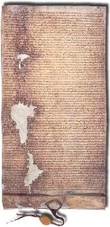

İngiltere Kralı John, 1214’te Fransa Kralı II. Philip ile girdiği bir savaşta yenilgiye uğradı. Ardından ülkesine dönüp, denizaşırı seferini desteklememiş olan baronlardan ağır vergiler toplayarak kraliyet hazinesini yeniden yapılandırmaya teşebbüs etti. Bunun üzerine baronlar isyan etti ve 1215 yazıyla beraber Lond-ra’yı ele geçirdiler.

Londra’nın düşmesiyle birlikte, Kral John, Thames Nehri’nin kıyısındaki çayırlıkta, Runnymede’de bir anlaşma yapmak için pazarlığa oturdu. Magna Carta adındaki bildiride özetlenen anlaşma, temel özgürlükler ve kralın mutlak gücü üzerine konan bir dizi sınırlamaların bir teminatıydı. Magna Carta 19 Haziran’da kraliyet mührüyle damgalandı ve ülke genelinde okunması emredildi. Anlaşma, sadece Kral John’u değil tüm mirasçılarını sonsuza dek bağlıyordu.
Anlaşmanın ilk taslağı sadece baronlar için geçerliydi, ama son hali her özgür insanı kapsayacak şekilde değiştirildi. O zamanlar özgür insanlar İngiltere nüfusunda azınlıktaydı ama yüzyıllar içinde anlaşma tüm yurttaşlar için geçerli olacak şekilde evrildi.
Magna Carta’nın ilk kısmı, İngiltere Kilisesi’nin “özgür olacağına ve haklarının azaltılmayacağına ve özgürlüklerinin zarar görmeyeceğine” dair teminatta bulunur.
Takip eden maddeler, kral ve asilzadeler arasındaki feodal ilişkiyi bir sisteme bağladı. Anlaşmaya, adlî bir süreç yaşanmaksızın kimsenin hapse atılamayacağına dair teminatlar ve hiçbir feodal verginin krallığın “genel rızası” olmaksızın yürürlüğe konamayacağına dair bir hüküm de konmuştu. Son madde ise, bir baronlar konseyini ve anlaşmayı kuvvetlendirmek üzere krallığa karşı güç uygulama yetkisi verilen ruhban sınıfını kurdu.
Magna Carta, İngiltere’de özgürlüğün ve hukuk devletinin temeli ve anayasal monarşinin ilk tohumu olarak değerlendirilir. Ancak, çıkarılmasından sonraki yüzlerce yıl boyunca büyük oranda ihmal edilmiştir. Papa II. Innocent, bildiriyi o Eylül ayında feshetti. 1217’de tekrar çıkarıldı, ama hukuken bağlayıcı görülmedi.
Magna Carta’nın önemi, on yedinci yüzyılda bir parlamento lideri olan Sir Edward Coke’un, Stuart krallarına karşı verdiği savaşta anlaşmanın ilkelerini tekrar ve tekrar alıntılamasıyla yeniden gündeme geldi. Ve sonraları Amerika’daki sömürgelere bağımsızlık mücadelelerinde ilham kaynağı oldu.
EK BİLGİLER:
1. Magna Carta, Latince’de “Büyük Sözleşme” anlamına gelir.
2. Magna Carta’nın dört orijinal kopyası hâlâ korunmaktadır. İki kopyası İngiliz Kütüphanesi’nde, diğer ikisiyse Lincoln ve Salisbury’deki katedral arşivlerinde görülebilir.
3. 1957’de American Bar Association, Runnymede’te bir anıt dikerek Amerikan hukukunun Magna Carta’ya olan borcunu ifade ettiler.